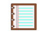
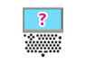
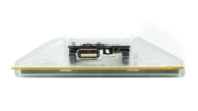

Welcome to Next Thing Co. PocketC.H.I.P. documentation.

Hey! Thanks for checking out PocketC.H.I.P.!
PocketC.H.I.P. is a game console, a portable synthesizer, and a Linux field terminal. With a bit of effort, it can become a whole lot more – see PockulusC.H.I.P., PocketC.H.I.P. as a VR headset (http://pockulus.getchip.com/). The point is, PocketC.H.I.P. can be what you want it to be and we’re excited to see what you will do with your PocketC.H.I.P..
These are the Docs, which are intended to help you get started with PocketC.H.I.P.. The Docs will introduce you to the the software that comes pre-installed on PocketC.H.I.P., explain how to use the system, and hopefully plant some ideas about how you can do even more with your PocketC.H.I.P.
The Docs will not teach you how to code (though it will give tips), how to program a game (though it will explain the tools), how to make music (though it will describe options), or how to build onto PocketC.H.I.P. (though it will encourage it).
Have fun!
Quick Start
This section explains how to turn on PocketC.H.I.P., setup WiFi, and charge your device.

Turn on PocketC.H.I.P. by pressing down the Home/Power button at the bottom, middle of the keyboard, for about 2 seconds.

PocketC.H.I.P. will take a moment to fully load, but while it does you will see the C.H.I.P. logo a progress bar in the bottom corner of the screen and then a PocketC.H.I.P. splash screen.
Once PocketC.H.I.P. is ready you will see a series of slides showing the PocketC.H.I.P. basics. Use the right arrow key or tap the right side of the screen to advance forward in the slideshow.
Once you have clicked through the basics, you will see a screen with six icons. This is the HOME screen.

Use a finger or stylus (or really anything that’s solid and isn’t sharp) to tap on the application you want to use. Press gently enough to make contact with the screen. There’s no need to apply a lot of force. A gentle touch will do.
While using an application, press the HOME/Power button to return to the HOME screen.
WiFi Setup
From the HOME screen, tap the settings icon in the bottom right corner to access the Settings screen.
Press the button to the right of the WiFi switch to open a menu of all the networks in range. Scroll through the list and select your network. If needed, slide your finger up and down on the list to scroll. To refresh the network list, just exit the list and enter again.
When prompted, enter the network password in the text field, then touch the [Connect] button. It may take a few seconds to connect.
Charging

Plug PocketC.H.I.P. into a 5-volt 1A power supply with a USB-micro cable to charge the 3.7V battery.
Because it’s C.H.I.P.’s on-board circuitry that manages the charging of PocketC.H.I.P.’s battery, the C.H.I.P. must remain attached to PocketC.H.I.P. for battery charging.
PocketC.H.I.P. is compatible with most cell phone chargers that use a USB-micro cable.
Troubleshooting
If PocketC.H.I.P. becomes unresponsive, hold down the Home/Power button for 8 seconds. This will cut power to PocketC.H.I.P., and immediately shut it down. Only use this shutdown method if no other shutdown methods work.
PocketC.H.I.P. at a Glance

Touchscreen

PocketC.H.I.P. features a 4.3" display made up of 480 x 272 pixels. The display is resistive touch and responds to tapping and sliding. That means you can use a finger or almost any object that isn’t sharp – you don’t want to scratch your screen.
Tap once to open apps, press buttons, and close windows. Press and slide to scroll, adjust sliderbars, and resize windows.
Keyboard

PocketC.H.I.P. has a full QWERTY keyboard with comfortably located arrow keys for gaming.
Each button is labeled with pink text. This identifies the default button behavior. Some buttons have two rows of pink text stacked atop each other. The bottom text is the primary behavior of the key. The top text identifies the button’s secondary behavior, which is accessible by holding down SHIFT and pressing the button.
For example: Holding SHIFT and pressing 1 types !
Some buttons are labeled to the top, left with white text on a pink background. These keys are mostly located on the right side of PocketC.H.I.P.’s keyboard and are for characters like function keys (F1, F2,…F11) and lesser used punctuation marks ({}<>|;). To type these specialized characters, hold down the FN key and press the desired button.

For example: Holding FN and pressing J types >
Removable enclosure

PocketC.H.I.P is extremely hackable and we encourage you to modify the hardware. It is super easy to take apart, since there are no screws used in the assembly.
If you want to fully disassemble PocketC.H.I.P., first (carefully) remove C.H.I.P. from the back of PocketC.H.I.P.. Then flip PocketC.H.I.P. around and remove the frame (technically known as a bezel) around the perimeter of the screen. Remove the back case of PocketC.H.I.P. by pressing the tabs above the screen and on either side of the Home/Power button.
While the case is open, check out the “secret” prototyping area and GPIO solder pads inside the enclosure!

GPIO Access

Along the top edge of PocketC.H.I.P. are input and output pins from C.H.I.P.. These are great for attaching and controlling sensors, motors, and LEDs.
See C.H.I.P. documentation to learn how to use them http://docs.getchip.com/#gpio.
Pencil stand

Give your hands a break! You can prop PocketC.H.I.P. up on a table with a pencil or pen. Pencils go in the right-hand-side pencil hole, and pens in the left hole. You only need one.
Power and Charging
Battery Life

Your PocketC.H.I.P. uses a 3.7-volt LiPo battery, that should last for about five hours of use. Increase battery life by dimming the screen brightness and turning off WiFi.
The top left corner of the screen shows your battery level, and PocketC.H.I.P. will warn you when the battery charge is getting too low for operation.
Charge PocketC.H.I.P.
Plug PocketC.H.I.P. into a 5-volt 1A power supply with a USB-micro cable to charge the 3.7V battery. PocketC.H.I.P. will turn on as soon as you connect the power, but this also consumes power. For faster charging, plug in the charging cable, turn PocketC.H.I.P off, and leave it plugged in.
Because it’s C.H.I.P.’s on-board circuitry that manages the charging of PocketC.H.I.P.’s battery, the C.H.I.P. must remain attached to PocketC.H.I.P. for battery charging.
PocketC.H.I.P. is compatible with with most cell phone chargers that use a USB-micro cable.
Sleep and Shutdown
Sleep
Sleep is a low-power state that saves battery, and also saves you time, since it’s faster for PocketC.H.I.P. to wake from sleep than to boot from a powered-off state.
To enter sleep mode, press the power icon in the bottom left corner of the home screen and select “sleep.” from the menu.
PocketC.H.I.P. is designed to turn off the screen and backlight after a few minutes without any user interaction.
To wake from either sleep state, simply touch the screen.

Shutdown
Shutdown PocketC.H.I.P. by pressing the power icon in the bottom left corner of the home screen and tapping “shutdown.”
If for some reason, PocketC.H.I.P. becomes unresponsive, you can also shut down PocketC.H.I.P. by holding down the HOME/Power button for eight (8) seconds. This cuts battery power to PocketC.H.I.P. and shuts it off. Only use this method if all other methods do not work.
Using PocketC.H.I.P.
Security
Just like you have a username and password for your e-mail account, PocketC.H.I.P. has a username and password for its operating system. The main user account on PocketC.H.I.P. is chip, and the password is also chip. Both username and password are case sensitive.
At startup, PocketC.H.I.P. automatically logs you in as chip. This means there’s no need to manually enter chip’s password chip. There are times when you’ll need to use the chip password, but you can get most things done without it.
PocketC.H.I.P. also has a second username called root, which should only be used for administrative tasks such as installing and removing software. The root password is also chip, and both are also case sensitive.
Never login directly as root, since it is extremely ease to delete critical files in the system. Instead, use the system administration command sudo, which provides a bit of protection from accidentally breaking your system.
For more information on using sudo, see the C.H.I.P. docs: http://docs.getchip.com/#terminal-for-beginners-glossary
| Username | Password |
|---|---|
| chip | chip |
| root | chip |
Changing Your Password
You should change your password for both the chip and root account to something other than chip. Open the terminal application from the PocketC.H.I.P. home screen, type the following command:
passwd
and press ENTER.
You’ll be prompted for your current password, which is chip and then required to enter in your new password twice. That’s it!
Flashing
To update your PocketC.H.I.P. to the latest factory settings, tap the power button and then press the flash software button. Then use a USB cable to connect PocketCHIP to a computer and follow the directions on http://flash.getchip.com.

WARNING: This will permanently delete all the data on PocketC.H.I.P., so backup anything you want to keep!
Applications

Your PocketC.H.I.P. comes with six applications on the home screen.
- PICO-8 - play, create, share 8-bit games
- SUNVOX - listen or compose electronic music
- Terminal - use a Linux shell to run commands
- Write - a lightweight text editor
- File Browser - a graphical file browser
- Help - the same documentation you’re reading here, built-in to PocketC.H.I.P.
PICO-8
Play PICO-8

Play games, change games, and make games with PICO-8! With a couple keystrokes, you can join the PICO-8 community and modify their games, or even make your own!

PICO-8 starts in splore mode, which lets you select which game to load. If PocketC.H.I.P. is connected to WiFi, games created by the PICO-8 community can be downloaded and played here. Navigate the menus using the arrow keys, and press 8 to select a game.
- Favourites: Save games to this list by pressing ESC while in the game and selecting “Favourite”. Games on this list are playable even when you’re not connected to WiFi.
- New: Lists the newest additions to the PICO-8 community.
- Featured: Lists the top-rated games from the PICO-8 community.
- Work In Progress: Lists recent releases of unfinished games submitted by members of the community.
- Collaboration: Lists user-submitted resources, remixes, and other useful things for others to use in their creations.
- Search: Performs a text search of PICO-8’s game library
- /: Lets you navigate the PICO-8 folders on your PocketC.H.I.P.
While in the splore mode, press ESC and select EXIT TO CONSOLE to start PICO-8’s command line interface. PICO-8’s command line commands are listed below:
- Help lists the available commands
- Splore return to cart explorer
- dir list the contents of the current directory
- cd [directory name] change to the desired directory
- cd .. go up a directory
- cd / change back to top directory (on PICO-8’s virtual drive)
- mkdir make a new directory
- folder open the current directory in the host operating system’s file browser
- load [name of game] load a game from the current directory (this is like putting a cartridge into the console)
- run plays the cart that is currently loaded
- save [filename] saves the currently loaded cart with the given name (this is used when you’ve made changes to the game’s code, graphics, or music)
Make Games (with PICO-8)

Gamers, get ready to become game-makers. In addition to playing the community’s games, PICO-8 allows you to modify existing games, or create games of your own using the code, graphics, and sound editors.
Code Editor
Access the code editor from the command line by pressing ESC. If you are in the middle of a game, press ESC and select EDIT THIS CART to edit the game’s code. Some other helpful shortcuts are:
Hold shift to select multiple characters or lines (or tap and drag) CTRL-X, C, V to cut, copy, or paste a selection CTRL-Z, Y to undo, redo CTRL-F, G to search for text, repeat search ALT-UP, DOWN to navigate to the previous, next function
The code editor is not the only editor in PICO-8. Access the other editors by tapping on the icons in the upper right-hand corner of the editor.
Sprite Editor

Use the sprite editor to create the artwork that make up tiles, characters, or other graphical elements of the game. The navigator at the bottom of the sprite editor screen shows an 8x8 pixel box that is displayed in the sprite sheet window, but it is possible to use freeform tools (pan, select) to edit larger areas.
Use the following tools to edit sprites:
Draw Tool
Click on the desired color and then click in the editor window to apply the color to each pixel Hold the left CONTROL button and click on a pixel to replace all of the same-colored pixels in the window with the selected color
Stamp Tool
Select an area of the sprite sheet that you want to copy using the select tool Select the stamp tool and click the location where you want the copied pixels to be pasted Hold Left-CONTROL to stamp with transparency (this pastes all of the non-black pixels in the selection)
Select Tool // shortcut: left SHIFT or S
Click and drag with the select tool to highlight an area of the sprite sheet Enter or click to select none
Pan Tool // shortcut: space
Click and drag to move around the sprite sheet
Fill Tool
Fill an area with the selected color If you have selected an area of the sprite sheet, the fill will be limited to the selected area If no selection is active, the fill will be limited to the area in the editor window
Map Editor

The tools for the map editor work similarly to those in the sprite editor. However, rather than choosing colors and drawing directly on the map sheet, select a sprite and use the draw or fill tool to place sprites into the map sheet.
Sound Effects Editor

PICO-8’s sound editor has two view modes: graph view and tracker view. Switch between modes by tapping on the graph and tracker buttons in the upper-left corner of the sound editor.
In both views, the number in the top left, under the view selector is the sound effect number. PICO-8 can handle 64 different effects.
Change the speed of the sound by clicking on the number in the box labelled SPD. Tap and drag to change the value (dragging left decreases, dragging right increases). The SPD value describes the duration of each note, so the higher the value, the slower the sound will play.
The LOOP values define the start and end points of a section of the sound effect that repeats. These can be changed by tapping and dragging like the SPD values.
Select from the 8 available instruments by clicking on the gray waveform boxes below the SPD and LOOP fields.
Press the spacebar to play/stop the current sound effect.
Graph mode
In graph mode, choose an instrument and then click-and-drag left-to-right to “draw” the sound across the pitch window. Draw higher in the window to create a sound with a higher pitch. Adjust the volume of each note, with the sliders in the volume window at the bottom of the graph mode screen.
Tracker mode
In the tracker mode, each line of 6 dots represents a note. Each dot represents an aspect of the notes. In left-to-right order they are:
Frequency
- Denoted by the letter of the musical pitch
- Input the pitches, using the q2w3er5t6y7ui keys like a piano
- Q is a ‘C’ note, W is a ’D’ note
- The number keys are the sharps and flats (like the black keys on a piano)
Octave
For each note, choose octave 1, 2, 3, or 4 in the OCT field at the top, or type the corresponding number 1 is the lowest octave and 4 is highest
Instrument
Choose one of the instruments in the gray waveform boxes or type the corresponding number (0 through 7)
Volume
Choose volume level in the VOL field or type the corresponding number (0 through 7)
Effect
Choose an effect from the boxes under the instruments or type the corresponding number (0 through 7) The 8 effects are * 0 none * 1 slide * 2 vibrato * 3 drop * 4 fade in * 5 fade out * 6 fast arpeggio * 7 slow arpeggio
Music Editor

The music editor allows up to four effects at a time for your game’s soundtrack. Click on the boxes above each column to activate the track and choose which effects will be included in each song pattern.
Patterns can be set to move to the next pattern, repeat the current pattern, or stop when finished with the arrow and stop icons on the upper right.
PICO-8 can hold up to 64 song patterns.
SunVox
The SunVox tracker is a fully featured music production studio. It’s lightweight, sounds great, and is designed to work with a stylus on a single, small screen. As a result, it’s a perfect fit for for making music and playing with sound on PocketC.H.I.P..
To get started launch SunVox, put on some headphones, press F9 (remember, you’ll need to hold the FN key and press 9 to get F9) to start playback, and dive into a complete world of electronic sound.
Interface Overview
Here’s a quick overview of what you see when you launch SunVox, and what the different parts of the interface do. Visit the http://www.warmplace.ru/wiki/sunvox:manual_en for more information, including complete keyboard mappings.

Pattern Editor
The “Pattern Editor” in SunVox is like a page of sheet music. Instead of staffs, measures, clefs, notes, and articulations, it has 32 rows and several columns that represent pitch, timing, and even how a pitch is played (soft, hard, bright, etc). Patterns represent chunks of a song that will later be dropped into the timeline of the song and arranged with other patterns.
Note: All the numbers are in hexadecimal (https://en.wikipedia.org/wiki/Hexadecima) so instead of the number “46”, you’ll see “2E”. These notes can play drums, lead instruments that sound like a guitar (maybe), bass notes, or even atonal washes of sound.
In the pattern editor you can add notes and note modifiers to compose patterns. Spacebar toggles edit mode on and off, use the arrow keys to select rows, use letters to enter notes, use numbers to enter (hexadecimal) values for velocity, module, and control values.
Touch Keyboard
This is the piano keyboard in the middle of the screen. Tap on it and you’ll hear sound. If you’re editing a Pattern, you can use this to enter notes. Just tap in the first column in the editor where you want a note to play and then tap the note on the touch keyboard. The editor will record the note you play and then move to the next line so you can tap the next note you want to play.
You can also use PocketC.H.I.P.’s QWERTY keyboard to enter notes. To enter notes on the QWERTY keyboard, use it similar to a piano. For example, Z is a c note and X is a d note. From left to right across the bottom row of the keyboard, the notes ascend. For sharp and flat notes, use the row above. For example, S is a c-sharp because it is above and between the Z and X keys (similar to where the c-sharp key is on a piano, above and between the c and d notes.
Modules (synths and effects)
Below the touch keyboard on the right is the Module Editor. This includes the different instruments, synthesizers, or effects you can use to change the sounds that you put into the patterns above. You can add new modules, delete current modules or rearrange modules to fit your needs.
With any sounds you make, you need something to generate the sound first. Double-tap on the background in the module editor and then choose a generator from the list., Once you’ve picked a generator need to connect it to the output. Do this by holding shift and then tapping and dragging from the generator to the OUT box
You can also add effects to the sounds made by the generator. Double-tap in the background again and choose an effect from the list. Now change the route the sound goes through by tapping and dragging from the generator to the effect. Then tap and drag from the effect to the output box.
You can have multiple instruments and different paths for the sound in the editor at one time. When editing patterns, tap on the generator you want to use and then edit the pattern. Changes to the pattern will be made using the currently selected generator.
To delete an effect or generator, double-tap the module and tap the delete button.
Parameter Controls
The bottom left corner of the interface is the Parameter Controls for the currently selected module. Violin players can bend a string and change how they bow, vocalists can shape their mouths and vocal chords, electric guitarists can stomp on pedals and hit the whammy bar, synthesizer nerds can turn knobs and sliders. In SunVox, you can modify how a synth or effect sounds using the horizontal sliders in the Parameter Controls.
Tap on a module and use the Parameter Controls on the left to modify the sound. Play the (piano or PocketC.H.I.P.) keyboard to hear the sound of a synth module. Use CTRL-arrows to jump to different modules. Shift-drag to connect and disconnect modules.
Resize Handles
Tap-and-drag in these areas to resize the panels.
Transport
Record new pattern into timeline, Play from beginning, Play, Play pattern, Stop.
Octave Up/Down
Change the octave of the touch keyboard.
Edit Pattern Indicator
When locked, you can’t make changes to the Pattern. Space bar unlocks the world of Pattern Editing!
Volume
Tap-and-drag the volume control to change output volume.
Menu Items
Sunvox has one simple menu. Tap here to save and load projects, set preferences like MIDI controllers, and the ultra-fun Touch Theremin feature! Select it in the Menu, and start making some noise!
Switch To Timeline
SunVox’s Timeline allows you to place, move, and rearrange patterns to create a song. On PocketC.H.I.P.’s small screen, you’ll need to use the Switch To Timeline button [image of button needed]. In Timeline, you can also freely record notes while you play them with the Record button, or you can clone patterns to repeat them. Move the patterns blocks around to create your composition. When finished, you can render a finished stereo file and distribute it as you want!

MIDI
You can attach a MIDI keyboard or controller to PocketC.H.I.P.’s USB port and have even more fun with SunVox. Not only can you play notes from a keyboard, but you can use MIDI knobs and sliders to control parameters of different synths. Tweak on!
Terminal

Many may find the Terminal archaic, it’s a place to type commands directly to the computer for execution and evaluation by the operating system. There are no icons, just text. Use the terminal to dive into the operating system’s guts, quickly move files around, play with PocketC.H.I.P.’s GPIO, or extend its capabilities. There’s a primer on using Terminal in the CHIP documentation (http://docs.getchip.com/#using-the-terminal) if you want to learn more.
Write

Need to jot down a note or write a quick reminder? Write is a minimalist text editor that’s well suited for the task. If you’re looking to code with Write, you’ll be pleased to learn that it supports line numbering and auto indentation, just look under the “Option” menu.
File Browser

The File Browser provides a visual representation of the files on your PocketC.H.I.P. using icons. Drag, drop, and double-click your way through this application for full control over every file on your device.
Help

You are reading it right now. No kidding! This document is available online and locally on PocketC.H.I.P., which means anywhere PocketC.H.I.P. goes, help will be right there with it.
Settings

Use the PocketC.H.I.P. settings to change WiFi, screen brightness, or volume levels.
WiFi & Bluetooth

From the HOME screen, tap the settings icon in the bottom right corner to access the Settings screen. Then tap the switch next to the WiFi icon to turn WiFi on.
Press the button to the right of the WiFi switch to open a menu of all the networks in range. Scroll through the list and select your network. If needed, tap the down arrow to see more networks.
When prompted, enter the network password in the text field, then touch the [Connect] button. It may take a few seconds to connect.
Currently only WiFi is configurable from the PocketC.H.I.P graphical interface. If you want to configure Bluetooth, consult the C.H.I.P. documentation page (docs.getchip.com).
Screen Brightness

Tap the brightness slider on the left to decrease brightness or tap the right to increase. Lowering the brightness is an easy way to increase battery life.
Volume

Adjust the volume slider by tapping on the left to decrease volume or on the right to increase it. Of course, you’ll need to have headphones or speakers attached to PocketC.H.I.P. to hear anything.
Using Accessories
PocketC.H.I.P. input and output ports are all handled by C.H.I.P.. Chances are good that if an accessory works with C.H.I.P., it will work with PocketC.H.I.P.. Just because PocketC.H.I.P is complete with a keyboard and screen doesn’t mean you can’t add speakers, storage, or wireless gadgets to make it even more fun.

Audio

PocketC.H.I.P. does not have a built-in speaker, but that doesn’t mean it can’t output sound. To listen to audio from PocketC.H.I.P., attach any wired headphones or speakers to the audio jack at the top of the device. This jack is known as a TRRS jack and can accommodate headphones with built-in microphones.
Micro USB
Use the micro USB port for charging PocketC.H.I.P. with a 5-volt, 1-amp power supply. Most cell phone chargers that use a USB-micro cable will work with PocketC.H.I.P.
Standard USB

Use the standard USB port for attaching USB accessories, like a keyboard, mouse, MIDI controller, sound card, hard drive, or more. USB devices take power to operate. If they are not independently powered, they will reduce the battery life of PocketC.H.I.P. or cause operation to become sporadic.
Glossary
Apt-Get: the package manager used for installing, upgrading, and removing application in Debian Linux.
Bezel: section of the case that clips around the touchscreen.
Booting: the process of PocketC.H.I.P. powering on and loading Debian.
Command Line: the area in the Terminal where text is input for the Operating System to evaluate. Debian: a version of the Linux Operating System that runs on PocketC.H.I.P..
Fantasy Console: a console game system that does not have dedicated, specific hardware to run its software. For example, PICO-8.
Flashing: the process of overwriting the contents of NAND with an Operating System and Applications.
Linux: a computer Operating System that runs on all different types of hardware. Everything from bank ATMs and cell phones to C.H.I.P. and PocketC.H.I.P.
NAND: a type of storage used on PocketC.H.I.P. for the OS, applications, and all your files.
Open Source Hardware: Open source hardware is hardware whose design is made publicly available so that anyone can study, modify, distribute, make, and sell the design or hardware based on that design. More info at the Open Source Hardware Association.
Open Source Software: Very briefly, Open Source Software is software where the source code for a program is made freely available. But there’s a lot more to this, as you can read at the Open Source Initiative website.
QWERTY keyboard: is a layout of keys where the top row’s first six keys spell “qwerty”.
SCP: a utility to transfer files to different computers.
Shell: see Terminal
SSH: (aka Secure Shell) is a utility used to login to remote computers running SSH service.
Stylus: a pointing device
Terminal: a program used to enter text commands for the Operating System to execute or interpret.
TRRS jack: a connector commonly used for audio or video equipment. TRRS stands for tip, ring, ring, and sleeve and refers the the way the male connector is divided.
FAQ
Can I take C.H.I.P. out of PocketC.H.I.P. use it? Not without reflashing. The C.H.I.P.s in PocketC.H.I.P. run a custom graphics software that’s designed for monitors and keyboards. It will boot, but the resolution and input will not be easy to use. Consider flashing your C.H.I.P. with a C.H.I.P. image.
Is it Legal to Modify PocketC.H.I.P.? Yes. PocketC.H.I.P. and C.H.I.P. are open source hardware. We encourage you to modify PocketC.H.I.P. and be sure to share what you’ve done with our community!
Will my microUSB charge work with PocketC.H.I.P.? PocketC.H.I.P. is compatible with with most cell phone chargers that use a USB-micro cable. PocketC.H.I.P. needs a power supply capable of outputting 5-volts with at least 1 amp.
Can I connect PocketC.H.I.P. to a second display? No. At this time PocketC.H.I.P. does not support multiple displays.
Will my Bluetooth Device Work? Yes, so long as the device is supported under Debian Linux. However, you will need to setup the bluetooth pairing using the terminal (http://docs.getchip.com/#connecting-bluetooth-devices). Our initial release of PocketC.H.I.P. does not provide graphical bluetooth configuration.
Pinch-zooming isn’t working, is my screen bad? Your screen is fine. The resistive touchscreen used in PocketC.H.I.P. does not support pinch gestures.
How can I get PockulusC.H.I.P.? Good news! You already almost have one. All you need to do is 3D print the file at (https://github.com/NextThingCo/PockulusCHIP) or find a friend to do it for you.